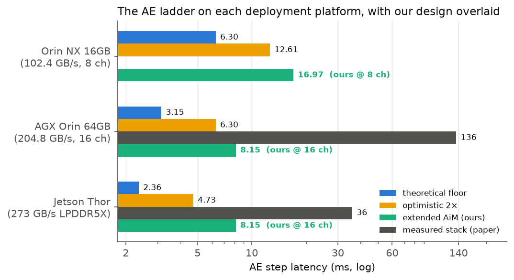

Deployment Platforms: Where Robots Actually Run VLAs, and Which Baselines Matter
Parts I–III built and accelerated the π0 Action Expert against Jetson AGX Orin. This part surveys what robots actually carry in 2025–26 — Orin NX inside shipping Unitree G1 humanoids, AGX Orin on research arms, Jetson Thor on NVIDIA’s GR00T reference humanoid — and evaluates our design against each platform’s full baseline ladder in both latency and energy. Key facts: every deployable platform is LPDDR-based (AiM’s home), and energy favors our design in 11 of 12 matrix cells, including against two of the three theoretical floors.
Overview
A design is judged by its baseline. This page fixes the baseline question rigorously: which platforms are deployment-real, what each one’s ladder (definitions in Part II §3) looks like, and where our extended-AiM design lands on speed and energy at each platform’s own memory budget.
1The platform landscape (2025–26)
| Platform | Memory system | BW (GB/s) | Compute | Power | Who deploys it |
|---|---|---|---|---|---|
| Jetson Orin NX 16GB | 16 GB LPDDR5, 128-bit (8 × x16 ch) | 102.4 | 1024 CUDA / 32 TC, 100 TOPS | 10–25 W | Inside shipping humanoids: Unitree G1 EDU (Orin NX), G1 Comp (157-TOPS Orin variant) |
| Jetson AGX Orin 64GB | 64 GB LPDDR5, 256-bit (16 × x16 ch) | 204.8 | 2048 CUDA / 64 TC, 42 TFLOP/s bf16 | 15–60 W | The research workhorse: arms, quadrupeds, the characterization paper’s reference edge platform |
| Jetson AGX Thor | 128 GB LPDDR5X, 256-bit | 273 | 2560 Blackwell CUDA / 96 TC, 2070 FP4 TFLOPS | 40–130 W | The 2025 flagship: NVIDIA GR00T reference humanoid (Unitree H2+, late 2026); $3,499 devkit |
| Qualcomm Dragonwing IQ10 | 64 GB LPDDR5X ECC | n/a | 18 Oryon cores + NPU, 700 TOPS | edge-class | Robotics reference design (Computex 2026); NEURA Robotics partnership |
| Huawei Ascend 310P (Atlas) | 48 GB LPDDR4X | 204.8 | 88 TFLOP/s fp16 NPU | edge-class | The paper’s cost-priority pick for Gr00t-class models; measured π0: 818 ms |
| RTX 4090 tower | 24 GB GDDR6X | 1000 | 330 TFLOP/s bf16 | 450 W | Lab rigs / fixed-base demos only — not battery-deployable, and not LPDDR |
Specs from NVIDIA data sheets / technical briefs (Orin family spec-verified against the AGX Orin Technical Brief in Part I’s study), Thor product pages, Qualcomm Computex 2026 announcements, and the characterization paper’s Table 10.
2LPDDR is the deployment reality — and AiM’s home turf
- Every platform a battery-powered robot can carry is LPDDR-based. The whole Jetson line, Thor’s LPDDR5X, Qualcomm’s robotics parts, Ascend’s Atlas edge modules. The one machine that beats our design on raw floor (the 4090) is the one nobody puts inside a humanoid — and it has no LPDDR, hence no AiM story at all.
- AiM ports across the family unchanged. LPDDR5X’s faster pins (Thor) speed only the external bus — the XPU’s side — not the in-bank MAC path, so AiM in Thor’s 16 channels performs like our 16-channel results while consuming none of the 2,070-TFLOP Blackwell silicon.
- Why “just add more LPDDR” is not a legitimate baseline change: the XPU shares the memory system, and its weight-streaming floor scales perfectly with channels (32 ch ⇒ 1.57 ms) while our AiM curve scales sub-linearly (broadcast terms, Part IV §6). A fair 32-channel comparison is XPU 1.57 vs. ours 5.26 ms — adding memory helps the baseline more than the design. The honest comparisons are same-memory-system ones, at each platform’s own budget.
3The XPU baseline ladder: what “floor” and “realistic 2×” mean
Before the results, the yardstick. All XPU baselines in this series are rungs on one ladder — estimates of how fast the Action Expert could run on Orin’s GPU, from physically impossible to actually measured:
| Rung | step (ms) | Definition | Exists? |
|---|---|---|---|
| theoretical floor | 3.15 | roofline physics: max(645.4 MB / 204.8 GB/s, 38.7 G / 42 T) = max(3.15, 0.92) ms. The 623 MB of weights are 150× Orin’s 4 MB L2, so every step must re-stream them across the bus; even a perfect implementation (bus 100% busy, compute fully hidden, zero launch gaps) takes 3.15 ms. Unbeatable by any software — it is the memory interface, not an implementation. | no — an ideal bound |
| realistic 2× | 6.30 | a well-engineered real stack sustaining ~50% of peak bandwidth end-to-end: fused kernels, tuned layouts, CUDA-graph launches. 2–4× floor is the standard empirical band for memory-bound transformer inference (heroic hand-tuned decoders reach ~1.3–1.7×). | hypothetical — no such public stack exists for π0 on Orin |
| realistic 4× | 12.61 | an ordinary well-compiled implementation. | plausible |
| compiled stack | ≈24 (Thor) | today’s stack after torch.compile — the measured effect of the standard software fix. The paper compiled Thor: 246 → 163 ms end-to-end (1.51×); per-step ≈24 ms assumes the speedup applies uniformly across phases [ASSUMPTION — only the end-to-end split was reported]. No compiled Orin number was reported at all, and even compiled, Thor’s AE sits 10× above its own physics floor — compilation recovers far less on edge silicon (1.51×) than on a 4090 (2.90×). | semi-measured (Thor) |
| measured stack | ≈136 | the characterization paper’s actual π0 on Orin: 543 ms per N=4 inference = 43× above the floor, at 22% SM utilization (unoptimized JAX/PyTorch). | yes — the only measured number |
4The Action-Expert ladder on each platform
Each platform’s ladder (floor / realistic 2× / measured; definitions) with our design evaluated at that platform’s channel budget: 16.97 ms at 8 channels (P1+P4+P7 tier; token-parallel is counter-productive at 8 ch), 9.77 ms at 16 channels (AF-free full design). Our design runs the action expert at 14.01 ms at 8 channels and 8.15 ms at 16 channels.

5The deployment-baseline matrix: speed and energy together
Cells are our speedup× / energy× vs. each baseline (energy via the Part IV §8 model; host power 15 / 20 / 40 W per platform [ASSUMPTION]; ours: 159 mJ/step at 8 ch, 166 mJ at 16 ch, 186 mJ at Thor’s 40 W).
| Baseline tier | Orin NX (8 ch) | AGX Orin (16 ch) | Thor (16 ch) |
|---|---|---|---|
| measured stack | n/a | 16.7× / 23.4× (136 ms, 3335 mJ) | 4.4× / 10.1× (36 ms, 1633 mJ) |
| compiled stack (semi-measured) | n/a | n/a (not reported) | ≈5.0× / ≈8× (≈24 ms, ≈1094 mJ) |
| realistic 4× | 1.80× / 3.80× (25.2 ms, 473 mJ) | 1.55× / 2.43× (12.6 ms, 347 mJ) | 1.16× / 2.83× (9.45 ms, 459 mJ) |
| realistic 2× | 0.90× / 2.06× (12.6 ms, 257 mJ) | 0.77× / 1.36× (6.30 ms, 194 mJ) | 0.58× / 1.55× (4.73 ms, 251 mJ) |
| theoretical floor | 0.45× / 1.20× (6.30 ms, 149 mJ) | 0.39× / 0.82× (3.15 ms, 118 mJ) | 0.29× / 0.90× (2.36 ms, 146 mJ) |

6The three anchor baselines (and the scale-down story)
- Orin NX, realistic band — the unassailable favorable anchor. 2.06× less energy than hypothetical-best software on the exact module inside a shipping Unitree G1 (0.74× on latency); 1.48×/2.97× against an ordinary compiled stack. No cherry-pick exposure: the platform is deployment ground truth and the baseline software is more generous than anything that exists.
- AGX Orin, measured — the headline, honestly labeled. 16.7×/23.4× against what the characterization paper actually measured on today’s research workhorse. At 136 ms/step the baseline burns 3.3 J per step — slowness is an energy disaster.
- Thor — lead with energy. 0.58× its hypothetical best on latency, yet 1.55× less energy — and the 2,070-TFLOP Blackwell GPU is entirely free during denoising. Against Thor’s measured stack: 4.4×/10.1×. The pitch: same speed as the best possible Thor software, half the energy, GPU freed.
- Scale-down: an NX-class module with AiM (14.01 ms) sits near AGX-class realistic AE latency (6.30 ms) at ~40% of module cost — “smaller XPU + smart memory ≥ bigger XPU” — with all but the final fresh-KV steps hidden behind the VLM under hybrid stale/fresh overlap (Part IV §7), which an XPU-only NX cannot do.
7Beyond NVIDIA: the LPDDR-robotics class is broadening
Qualcomm’s Dragonwing IQ10 robotics reference design (700-TOPS NPU, 64 GB LPDDR5X ECC, Computex 2026) and the NEURA Robotics partnership signal a second major vendor building humanoid-class compute on LPDDR; Huawei’s Ascend 310P Atlas modules already appear in the characterization paper’s leaderboard (818 ms measured π0; the cost-priority pick for Gr00t). Two implications for this research: (a) every such platform is a potential AiM host — the extended-ISA design is vendor-neutral at the memory level; (b) the software-stack fragmentation these platforms suffer for VLA inference (compilation effectiveness varied 1.5–2.9× across vendors in the paper) does not touch a PIM Action Expert, whose “kernel” is an ISR trace independent of the host’s ML stack.
Series & sources
- Part I — Anatomy of a flow-matching VLA: π0 module by module
- Part II (this page) — Deployment platforms & baselines: where robots run VLAs, and what counts as fast.
- Part III — LPDDR5, stock AiM, and why the offload loses 4.5×: the problem, quantified
- Part IV — Our ISA extensions: 28.55 → 8.15 ms per step, and how they differ from prior designs
Sources: NVIDIA Jetson Thor product pages and 2025 dev-kit coverage (128 GB 256-bit LPDDR5X, 273 GB/s, 2070 FP4 TFLOPS, 130 W); NVIDIA GR00T reference humanoid announcement (Unitree H2+ × Thor, late 2026); Unitree G1 EDU / Comp listings (Orin NX / 157-TOPS Orin onboard); NVIDIA Jetson AGX Orin Technical Brief v1.2 and Orin NX data sheet (spec-verified in the study); Qualcomm Dragonwing IQ10 Computex 2026 announcements and the NEURA partnership; “Characterizing VLA Models across XPUs” (arXiv:2604.24447) Tables 1/9/10 for measured latencies and the Ascend/Intel entries. Energy cells from the study’s Phase-8 model (CENT power-calculator constants; assumptions tagged there).